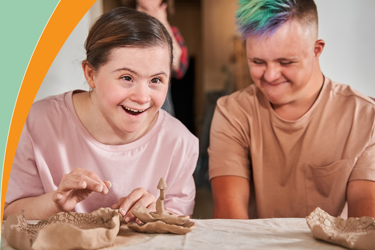
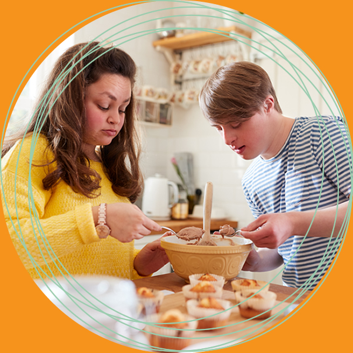
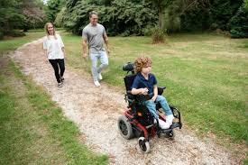
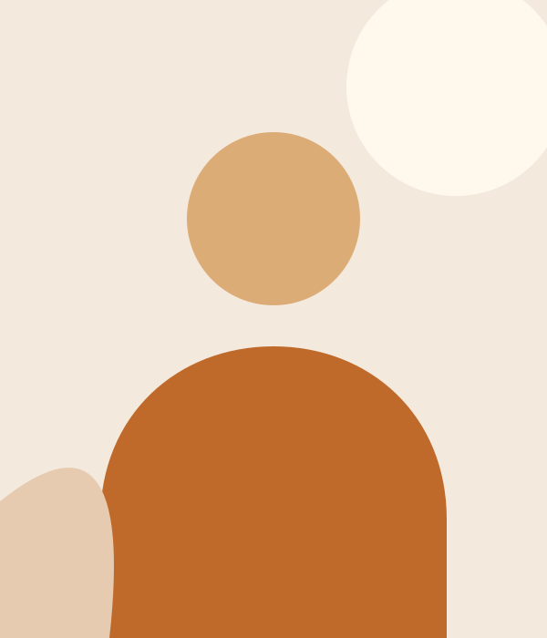
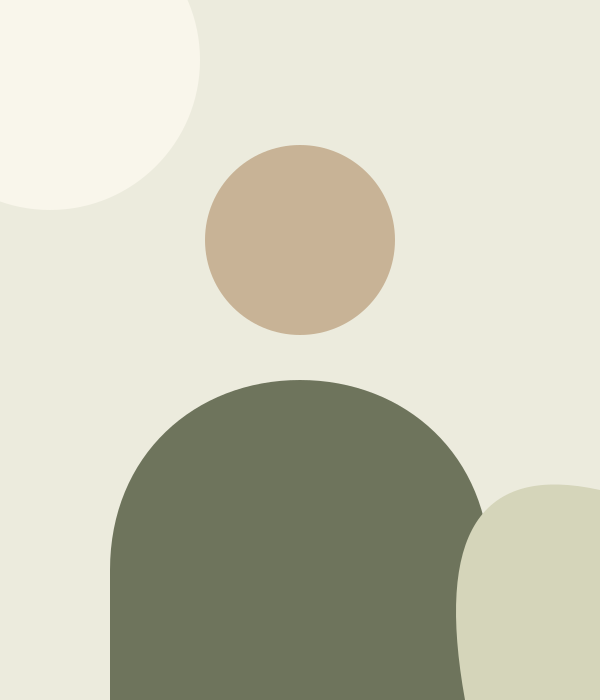
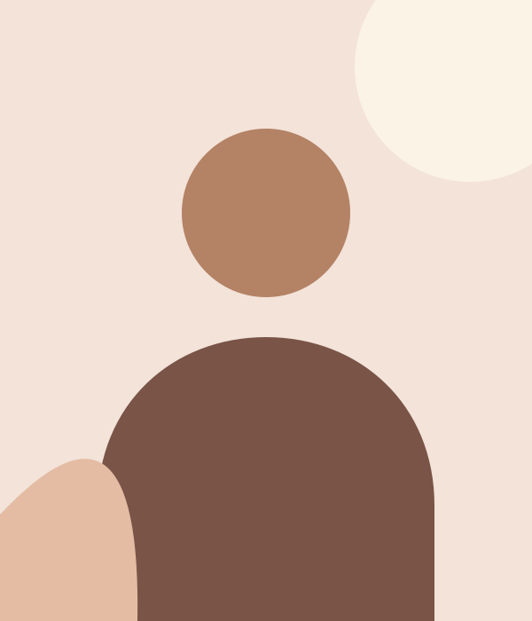

Community Participation
Connect with people, explore your interests and feel part of your community.
Explore this support : Community ParticipationNDIS disability support · Sydney
A little support can open up a world of possibility. At P.A.C.E.S., we work with you to build everyday confidence, connection and independence.
People first. Support shaped around you.


Welcome to P.A.C.E.S.
Welcome to Prosper and Care Endeavour Services. We celebrate each person’s abilities, listen to what matters to them and let their needs guide our support.
From everyday care to community experiences and practical skills, we work alongside you to create a pathway that reflects your strengths, interests and aspirations.
Our six support services
Connect with people, explore your interests and feel part of your community.
Explore this support : Community Participation
Personalised everyday support that respects your home, preferences and independence.
Explore this support : Home Care
Talk to us about accessible travel and the assistance you need along the way.
Explore this support : Transportation
Make room for creativity, outdoor experiences and activities shaped around you.
Explore this support : Day Programs
Build everyday skills, grow your confidence and enjoy learning something new.
Explore this support : Activities and Skill Building
Enjoy your weekend with meaningful activities that reflect your interests.
Explore this support : Weekend ProgramsWhy choose P.A.C.E.S.?
Support is more meaningful when you help shape it. Our approach makes space for your voice, your preferences and your goals.
Our approachWe recognise your individual strengths, talents and aspirations.
We plan alongside participants and families, with your needs guiding the way.
Flexible scheduling and regular reviews help support evolve with you.
Our focus is on opportunities for independence, inclusion and personal growth.
How it works
We take time to understand your abilities, needs and goals.
You, your family and our team shape a plan together.
We discuss support times that suit your lifestyle.
Activities are shaped around your interests and goals.
We review your support and adapt as your needs change.
Meet our support workers

Photo to be added
Enrolled Nurse and Director
Issa Tamerji is an Enrolled Nurse and Director at P.A.C.E.S.
An enquiry starts a conversation; it does not confirm a booking.

Photo to be added
Registered Nurse
Farah is a Registered Nurse with the P.A.C.E.S. team.
An enquiry starts a conversation; it does not confirm a booking.

Photo to be added
Registered Nurse
Sujata is a Registered Nurse with the P.A.C.E.S. team.
An enquiry starts a conversation; it does not confirm a booking.
Photo to be added
Enrolled Nurse
Bilal is an Enrolled Nurse with the P.A.C.E.S. team.
An enquiry starts a conversation; it does not confirm a booking.
A little clarity
Getting support should feel approachable. Here are a few things you may like to know.
All frequently asked questionsOur six services are Community Participation, Home Care, Transportation, Day Programs, Activities and Skill Building, and Weekend Programs. Explore our services to see what each involves.
We start by discussing your abilities, needs and goals. Participants, families and our team plan together, agree on scheduling and activities, and regularly review the support as needs change.
Yes. The support process described by P.A.C.E.S. includes collaborative planning with participants, families and our team, with the participant’s needs and choices guiding the plan.
The existing programs include creative arts, outdoor experiences, hobbies and opportunities to relax or learn. Activities are discussed around individual interests and capabilities. Please ask the team about current options.
Tell us what matters to you. We’re here to listen and explore how we may be able to help.